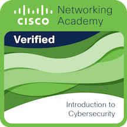
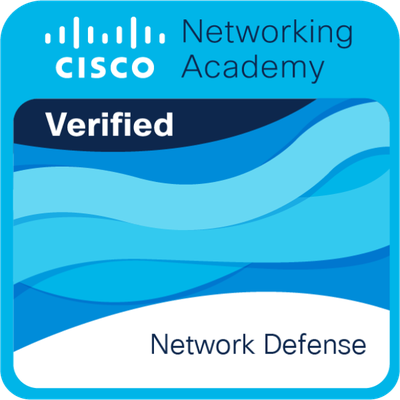
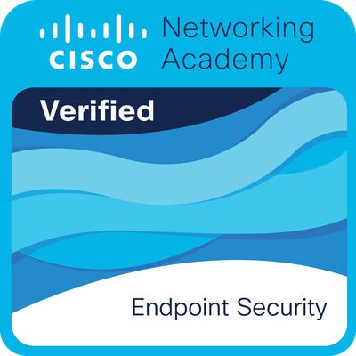
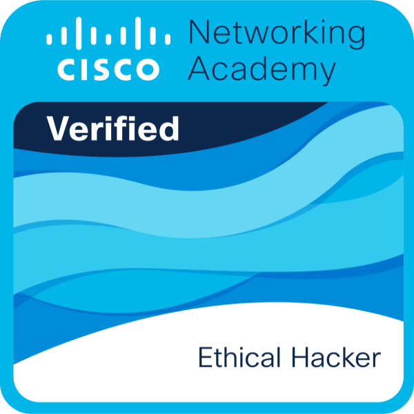

Introduction to Cybersecurity
Cisco Networking Academy

Resena y Reflexion
El curso Introduction to Cybersecurity me permitio conocer los conceptos fundamentales de la ciberseguridad y entender la gran importancia que tiene actualmente en el mundo digital. A lo largo de esta experiencia aprendi que la tecnologia ofrece muchos beneficios, pero tambien representa riesgos que pueden afectar tanto a personas como a empresas si no se toman medidas adecuadas de proteccion.
Uno de los temas que mas me llamo la atencion fue conocer las diferentes amenazas ciberneticas que existen, como malware, phishing, robo de informacion y ataques a redes. Antes de este curso no dimensionaba realmente el impacto que pueden tener estos ataques en la vida diaria y en las organizaciones. Ahora comprendo que la ciberseguridad no solamente trata de usar antivirus, sino de implementar estrategias completas de prevencion y proteccion.
Tambien aprendi sobre la importancia de mantener buenas practicas digitales, como utilizar contrasenas seguras, actualizar sistemas constantemente y proteger la informacion sensible. Considero que estas ensenanzas son muy valiosas porque pueden aplicarse tanto en el ambito profesional como en la vida personal.
Otro aspecto importante fue conocer las areas laborales relacionadas con la ciberseguridad y entender que es un campo con gran crecimiento y demanda actualmente. Esto aumento mi interes por seguir aprendiendo mas sobre analisis de amenazas, seguridad en redes y proteccion de sistemas.
En conclusion, este curso me dejo una vision mas amplia sobre los riesgos tecnologicos actuales y la necesidad de estar preparados para enfrentarlos. Ademas, fortalecio mi interes por seguir desarrollandome en el area de tecnologias de la informacion y ciberseguridad, ya que considero que es un campo muy importante para el presente y futuro digital.
Conceptos Basicos de Redes
Cisco Networking Academy

Resena y Reflexion
Durante el curso de Conceptos Basicos de Redes aprendi la importancia que tienen las redes de computadoras dentro de la comunicacion digital actual. Antes de tomar este curso conocia algunos conceptos de manera superficial, pero ahora entiendo mejor como interactuan los dispositivos para compartir informacion de manera eficiente y segura. Uno de los temas que mas llamo mi atencion fue el funcionamiento de las direcciones IP, los protocolos de comunicacion y la forma en que los datos viajan a traves de la red.
Tambien comprendi la diferencia entre dispositivos como routers, switches y puntos de acceso, ademas de la funcion especifica que cumple cada uno dentro de una infraestructura de red. Este conocimiento me permitio visualizar mejor como se construyen las redes tanto en hogares como en empresas. Considero que esta seccion fue muy importante porque actualmente practicamente todas las areas tecnologicas dependen de una conexion estable y bien configurada.
Otra ensenanza importante fue entender que una red no solamente consiste en conectar equipos, sino en mantener una comunicacion organizada, rapida y segura. Ademas, el curso fortalecio mi interes por el area de ciberseguridad, ya que entendi que para proteger una red primero es necesario comprender como funciona.
Finalmente, este curso me dejo una vision mas amplia sobre las oportunidades laborales relacionadas con redes y telecomunicaciones. Considero que fue una experiencia muy util porque fortalecio mis bases tecnicas y me ayudo a desarrollar habilidades que seran importantes en mi formacion profesional y en futuros proyectos relacionados con tecnologias de la informacion.
Dispositivos de Red y Configuracion Inicial
Cisco Networking Academy

Resena y Reflexion
En el curso de Dispositivos de Red y Configuracion Inicial aprendi aspectos fundamentales relacionados con la configuracion y administracion basica de dispositivos de red. Esta experiencia fue muy enriquecedora porque me permitio conocer de manera mas practica como funcionan equipos como routers y switches dentro de una infraestructura tecnologica.
Uno de los aprendizajes mas importantes fue la configuracion inicial de dispositivos Cisco mediante comandos basicos. Aprendi como acceder a los equipos, asignar configuraciones esenciales, establecer contrasenas y realizar pruebas de conectividad. Estas actividades me ayudaron a comprender la importancia de una correcta configuracion desde el inicio para garantizar el buen funcionamiento de la red.
Ademas, entendi la relevancia de mantener buenas practicas de seguridad desde las primeras etapas de configuracion. El curso tambien me permitio desarrollar habilidades de analisis y solucion de problemas basicos relacionados con la conectividad. Considero que esto es muy importante, ya que en el area de tecnologias de la informacion es comun enfrentarse a fallas o errores de comunicacion entre dispositivos.
Otro aspecto que me gusto fue que el curso combino teoria y practica, permitiendome aplicar directamente los conocimientos aprendidos. Gracias a esto, pude sentirme mas familiarizada con entornos reales de redes y con herramientas utilizadas en el ambito profesional.
En conclusion, este curso fortalecio mis conocimientos tecnicos y aumento mi interes por el area de redes y ciberseguridad. Ademas, me dejo ensenanzas importantes sobre la responsabilidad y precision que se requieren al trabajar con infraestructuras tecnologicas, ya que una mala configuracion puede afectar la comunicacion y seguridad de toda una organizacion.
Seguridad de Terminales
Cisco Networking Academy

Resena y Reflexion
Durante el curso de Seguridad de Terminales aprendi la importancia de proteger los dispositivos finales que se utilizan diariamente dentro de una red, como computadoras, laptops y dispositivos moviles. Antes de tomar este curso pensaba que la seguridad dependia principalmente de servidores o firewalls, pero ahora entiendo que los equipos terminales tambien representan un punto critico dentro de la ciberseguridad.
Uno de los temas mas importantes fue conocer las amenazas que pueden afectar directamente a los dispositivos, como virus, ransomware, spyware y accesos no autorizados. Tambien aprendi diferentes metodos de proteccion, incluyendo el uso de antivirus, actualizaciones de seguridad, autenticacion y politicas de acceso.
Ademas, comprendi que muchas brechas de seguridad ocurren por descuidos de los usuarios o por malas configuraciones en los dispositivos. Esto me ayudo a reflexionar sobre la importancia de mantener buenas practicas de seguridad tanto en el ambito personal como profesional.
Otro aspecto que me gusto fue aprender sobre monitoreo y administracion de terminales para detectar comportamientos sospechosos y responder rapidamente ante posibles incidentes. Considero que este conocimiento es muy util porque actualmente la mayoria de las empresas dependen de multiples dispositivos conectados a la red.
En conclusion, este curso me permitio comprender mejor la importancia de la seguridad en los dispositivos finales y como una correcta proteccion puede evitar incidentes graves. Ademas, fortalecio mis conocimientos en ciberseguridad y aumento mi interes por seguir aprendiendo sobre proteccion de sistemas y administracion segura de equipos tecnologicos.
Gestion de Amenazas Ciberneticas
Cisco Networking Academy

Resena y Reflexion
Durante el curso de Gestion de Amenazas Ciberneticas aprendi la importancia de identificar, analizar y prevenir amenazas que pueden poner en riesgo la informacion y los sistemas de una organizacion. Este curso me ayudo a comprender que actualmente los ataques ciberneticos son cada vez mas frecuentes y sofisticados, por lo que las empresas deben estar preparadas para responder de manera eficiente.
Uno de los temas que mas llamo mi atencion fue el analisis de diferentes tipos de amenazas y vulnerabilidades. Aprendi como los atacantes aprovechan errores humanos o fallas de seguridad para obtener acceso no autorizado a sistemas y datos importantes. Tambien comprendi que la prevencion y el monitoreo constante son fundamentales para reducir riesgos.
Ademas, aprendi sobre herramientas y estrategias utilizadas para detectar actividades sospechosas dentro de una red. Esto me permitio entender mejor el trabajo que realizan los analistas de ciberseguridad para proteger la informacion y mantener la continuidad de las operaciones de una empresa.
Otra ensenanza importante fue la relevancia de crear politicas de seguridad y capacitar constantemente a los usuarios, ya que muchas amenazas se originan por descuidos o falta de conocimiento. Considero que este punto es muy importante porque la seguridad informatica no depende unicamente de la tecnologia, sino tambien de las personas.
En conclusion, este curso fortalecio mis conocimientos sobre la gestion de riesgos y amenazas ciberneticas. Ademas, me permitio desarrollar una mayor conciencia sobre la importancia de proteger la informacion en entornos digitales. Considero que las ensenanzas obtenidas seran muy utiles tanto en mi formacion academica como en mi futuro profesional dentro del area de tecnologias de la informacion y ciberseguridad.
Carrera Profesional de Analista Junior en Ciberseguridad
Cisco Networking Academy
Resena y Reflexion
La Carrera Profesional de Analista Junior en Ciberseguridad fue una experiencia muy completa que me permitio integrar distintos conocimientos relacionados con redes, amenazas ciberneticas, seguridad informatica y analisis de riesgos. Considero que este programa me ayudo a desarrollar una vision mas amplia sobre el trabajo y las responsabilidades que tiene un analista de ciberseguridad dentro de una organizacion.
A lo largo del curso aprendi sobre identificacion de amenazas, proteccion de sistemas, monitoreo de redes y prevencion de incidentes de seguridad. Tambien comprendi la importancia de analizar constantemente posibles vulnerabilidades para evitar ataques que puedan comprometer la informacion y la operacion de las empresas.
Uno de los aprendizajes mas importantes fue entender que la ciberseguridad no depende unicamente de herramientas tecnologicas, sino tambien del analisis, la prevencion y la toma de decisiones correctas. Ademas, aprendi la relevancia del trabajo en equipo y de mantener una actualizacion constante debido a que las amenazas evolucionan continuamente.
Otro aspecto que me motivo fue conocer mas sobre las oportunidades profesionales dentro del area de ciberseguridad. Este curso fortalecio mi interes por seguir especializandome y adquirir mas experiencia en temas relacionados con proteccion de redes, analisis de amenazas y seguridad informatica.
En conclusion, esta carrera profesional me dejo conocimientos tecnicos importantes y tambien una mayor conciencia sobre la responsabilidad que implica proteger la informacion digital. Considero que esta experiencia sera de gran utilidad para mi desarrollo academico y profesional, ya que me permitio fortalecer habilidades necesarias para desempenarme en el area de tecnologias de la informacion y ciberseguridad.
Hacker Etico
Cisco Networking Academy

Resena y Reflexion
El curso de Hacker Etico fue una experiencia muy interesante porque me permitio comprender como trabajan los especialistas en seguridad para identificar vulnerabilidades y prevenir ataques informaticos. A lo largo del curso aprendi que el hacking etico tiene como objetivo mejorar la seguridad de los sistemas mediante pruebas controladas y autorizadas.
Uno de los aspectos que mas me llamo la atencion fue conocer las diferentes tecnicas que pueden utilizarse para detectar fallas de seguridad en redes, aplicaciones y dispositivos. Esto me ayudo a entender la importancia de anticiparse a los ataques antes de que puedan causar danos reales. Tambien aprendi que un hacker etico debe actuar siempre con responsabilidad y etica profesional.
Ademas, el curso me permitio comprender mejor como piensan los atacantes y cuales son los metodos mas comunes utilizados para vulnerar sistemas. Considero que este conocimiento es muy valioso porque ayuda a implementar mejores medidas de proteccion y prevencion.
Otro aprendizaje importante fue la relevancia de realizar analisis constantes de seguridad y mantener actualizados los sistemas. Tambien entendi que la ciberseguridad es un proceso continuo que requiere monitoreo, capacitacion y mejora constante.
En conclusion, este curso fortalecio mi interes por el area de ciberseguridad ofensiva y me permitio desarrollar una vision mas critica sobre la proteccion de sistemas y redes. Ademas, me dejo ensenanzas importantes sobre la responsabilidad que implica trabajar con informacion y herramientas de seguridad informatica. Considero que los conocimientos adquiridos seran muy utiles en mi formacion profesional y en futuros proyectos relacionados con tecnologias de la informacion.